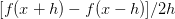

内容列表：
- 简介
- 损失函数可视化
- 最优化
- 策略#1：随机搜索
- 策略#2：随机局部搜索
- 策略#3：跟随梯度
- 梯度计算 译者注：下篇起始处
- 使用有限差值进行数值计算
- 微分分析计算梯度
- 梯度下降
- 小结
梯度计算
计算梯度有两种方法：一个是缓慢的近似方法（数值梯度法），但实现相对简单。另一个方法（分析梯度法）计算迅速，结果精确，但是实现时容易出错，且需要使用微分。现在对两种方法进行介绍：
利用有限差值计算梯度
上节中的公式已经给出数值计算梯度的方法。下面代码是一个输入为函数f和向量x，计算f的梯度的通用函数，它返回函数f在点x处的梯度：
def eval_numerical_gradient(f, x):"""一个f在x处的数值梯度法的简单实现- f是只有一个参数的函数- x是计算梯度的点"""fx = f(x) # 在原点计算函数值grad = np.zeros(x.shape)h = 0.00001# 对x中所有的索引进行迭代it = np.nditer(x, flags=['multi_index'], op_flags=['readwrite'])while not it.finished:# 计算x+h处的函数值ix = it.multi_indexold_value = x[ix]x[ix] = old_value + h # 增加hfxh = f(x) # 计算f(x + h)x[ix] = old_value # 存到前一个值中 (非常重要)# 计算偏导数grad[ix] = (fxh - fx) / h # 坡度it.iternext() # 到下个维度return grad根据上面的梯度公式，代码对所有维度进行迭代，在每个维度上产生一个很小的变化h，通过观察函数值变化，计算函数在该维度上的偏导数。最后，所有的梯度存储在变量grad中。
实践考量：注意在数学公式中，h的取值是趋近于0的，然而在实际中，用一个很小的数值（比如例子中的1e-5）就足够了。在不产生数值计算出错的理想前提下，你会使用尽可能小的h。还有，实际中用中心差值公式（centered difference formula）效果较好。细节可查看wiki。
可以使用上面这个公式来计算任意函数在任意点上的梯度。下面计算权重空间中的某些随机点上，CIFAR-10损失函数的梯度：
# 要使用上面的代码我们需要一个只有一个参数的函数# (在这里参数就是权重)所以也包含了X_train和Y_traindef CIFAR10_loss_fun(W):return L(X_train, Y_train, W)W = np.random.rand(10, 3073) * 0.001 # 随机权重向量df = eval_numerical_gradient(CIFAR10_loss_fun, W) # 得到梯度loss_original = CIFAR10_loss_fun(W) # 初始损失值print 'original loss: %f' % (loss_original, )# 查看不同步长的效果for step_size_log in [-10, -9, -8, -7, -6, -5,-4,-3,-2,-1]:step_size = 10 ** step_size_logW_new = W - step_size * df # 权重空间中的新位置loss_new = CIFAR10_loss_fun(W_new)print 'for step size %f new loss: %f' % (step_size, loss_new)# 输出:# original loss: 2.200718# for step size 1.000000e-10 new loss: 2.200652# for step size 1.000000e-09 new loss: 2.200057# for step size 1.000000e-08 new loss: 2.194116# for step size 1.000000e-07 new loss: 2.135493# for step size 1.000000e-06 new loss: 1.647802# for step size 1.000000e-05 new loss: 2.844355# for step size 1.000000e-04 new loss: 25.558142# for step size 1.000000e-03 new loss: 254.086573# for step size 1.000000e-02 new loss: 2539.370888# for step size 1.000000e-01 new loss: 25392.214036在梯度负方向上更新：在上面的代码中，为了计算W_new，要注意我们是向着梯度df的负方向去更新，这是因为我们希望损失函数值是降低而不是升高。
步长的影响：梯度指明了函数在哪个方向是变化率最大的，但是没有指明在这个方向上应该走多远。在后续的课程中可以看到，选择步长（也叫作学习率）将会是神经网络训练中最重要（也是最头痛）的超参数设定之一。还是用蒙眼徒步者下山的比喻，这就好比我们可以感觉到脚朝向的不同方向上，地形的倾斜程度不同。但是该跨出多长的步长呢？不确定。如果谨慎地小步走，情况可能比较稳定但是进展较慢（这就是步长较小的情况）。相反，如果想尽快下山，那就大步走吧，但结果也不一定尽如人意。在上面的代码中就能看见反例，在某些点如果步长过大，反而可能越过最低点导致更高的损失值。
————————————————————————————————————————
————————————————————————————————————————
效率问题：你可能已经注意到，计算数值梯度的复杂性和参数的量线性相关。在本例中有30730个参数，所以损失函数每走一步就需要计算30731次损失函数的梯度。现代神经网络很容易就有上千万的参数，因此这个问题只会越发严峻。显然这个策略不适合大规模数据，我们需要更好的策略。
微分分析计算梯度
使用有限差值近似计算梯度比较简单，但缺点在于终究只是近似（因为我们对于h值是选取了一个很小的数值，但真正的梯度定义中h趋向0的极限），且耗费计算资源太多。第二个梯度计算方法是利用微分来分析，能得到计算梯度的公式（不是近似），用公式计算梯度速度很快，唯一不好的就是实现的时候容易出错。为了解决这个问题，在实际操作时常常将分析梯度法的结果和数值梯度法的结果作比较，以此来检查其实现的正确性，这个步骤叫做梯度检查。
用SVM的损失函数在某个数据点上的计算来举例：
可以对函数进行微分。比如，对 进行微分得到：
进行微分得到：
梯度下降
# 普通的梯度下降while True:weights_grad = evaluate_gradient(loss_fun, data, weights)weights += - step_size * weights_grad # 进行梯度更新这个简单的循环在所有的神经网络核心库中都有。虽然也有其他实现最优化的方法（比如LBFGS），但是到目前为止，梯度下降是对神经网络的损失函数最优化中最常用的方法。课程中，我们会在它的循环细节增加一些新的东西（比如更新的具体公式），但是核心思想不变，那就是我们一直跟着梯度走，直到结果不再变化。
小批量数据梯度下降（Mini-batch gradient descent）：在大规模的应用中（比如ILSVRC挑战赛），训练数据可以达到百万级量级。如果像这样计算整个训练集，来获得仅仅一个参数的更新就太浪费了。一个常用的方法是计算训练集中的小批量（batches）数据。例如，在目前最高水平的卷积神经网络中，一个典型的小批量包含256个例子，而整个训练集是多少呢？一百二十万个。这个小批量数据就用来实现一个参数更新：
# 普通的小批量数据梯度下降while True:data_batch = sample_training_data(data, 256) # 256个数据weights_grad = evaluate_gradient(loss_fun, data_batch, weights)weights += - step_size * weights_grad # 参数更新这个方法之所以效果不错，是因为训练集中的数据都是相关的。要理解这一点，可以想象一个极端情况：在ILSVRC中的120万个图像是1000张不同图片的复制（每个类别1张图片，每张图片有1200张复制）。那么显然计算这1200张复制图像的梯度就应该是一样的。对比120万张图片的数据损失的均值与只计算1000张的子集的数据损失均值时，结果应该是一样的。实际情况中，数据集肯定不会包含重复图像，那么小批量数据的梯度就是对整个数据集梯度的一个近似。因此，在实践中通过计算小批量数据的梯度可以实现更快速地收敛，并以此来进行更频繁的参数更新。
小批量数据策略有个极端情况，那就是每个批量中只有1个数据样本，这种策略被称为随机梯度下降（Stochastic Gradient Descent 简称SGD），有时候也被称为在线梯度下降。这种策略在实际情况中相对少见，因为向量化操作的代码一次计算100个数据 比100次计算1个数据要高效很多。即使SGD在技术上是指每次使用1个数据来计算梯度，你还是会听到人们使用SGD来指代小批量数据梯度下降（或者用MGD来指代小批量数据梯度下降，而BGD来指代则相对少见）。小批量数据的大小是一个超参数，但是一般并不需要通过交叉验证来调参。它一般由存储器的限制来决定的，或者干脆设置为同样大小，比如32，64，128等。之所以使用2的指数，是因为在实际中许多向量化操作实现的时候，如果输入数据量是2的倍数，那么运算更快。
小结
————————————————————————————————————————
信息流的总结图例。数据集中的(x,y)是给定的。权重从一个随机数字开始，且可以改变。在前向传播时，评分函数计算出类别的分类评分并存储在向量f中。损失函数包含两个部分：数据损失和正则化损失。其中，数据损失计算的是分类评分f和实际标签y之间的差异，正则化损失只是一个关于权重的函数。在梯度下降过程中，我们计算权重的梯度（如果愿意的话，也可以计算数据上的梯度），然后使用它们来实现参数的更新。
—————————————————————————————————————————
在本节课中：
- 将损失函数比作了一个高维度的最优化地形，并尝试到达它的最底部。最优化的工作过程可以看做一个蒙着眼睛的徒步者希望摸索着走到山的底部。在例子中，可见SVM的损失函数是分段线性的，并且是碗状的。
- 提出了迭代优化的思想，从一个随机的权重开始，然后一步步地让损失值变小，直到最小。
- 函数的梯度给出了该函数最陡峭的上升方向。介绍了利用有限的差值来近似计算梯度的方法，该方法实现简单但是效率较低（有限差值就是h，用来计算数值梯度）。
- 参数更新需要有技巧地设置步长。也叫学习率。如果步长太小，进度稳定但是缓慢，如果步长太大，进度快但是可能有风险。
- 讨论权衡了数值梯度法和分析梯度法。数值梯度法计算简单，但结果只是近似且耗费计算资源。分析梯度法计算准确迅速但是实现容易出错，而且需要对梯度公式进行推导的数学基本功。因此，在实际中使用分析梯度法，然后使用梯度检查来检查其实现正确与否，其本质就是将分析梯度法的结果与数值梯度法的计算结果对比。
- 介绍了梯度下降算法，它在循环中迭代地计算梯度并更新参数。
预告：这节课的核心内容是：理解并能计算损失函数关于权重的梯度，是设计、训练和理解神经网络的核心能力。下节中，将介绍如何使用链式法则来高效地计算梯度，也就是通常所说的反向传播（backpropagation）机制。该机制能够对包含卷积神经网络在内的几乎所有类型的神经网络的损失函数进行高效的最优化。